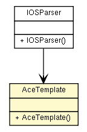

fr.univrennes1.cri.jtacl.equipments.cisco.router
Class AceTemplate

java.lang.Object
 fr.univrennes1.cri.jtacl.equipments.cisco.router.AceTemplate
fr.univrennes1.cri.jtacl.equipments.cisco.router.AceTemplate
public class AceTemplate
- extends java.lang.Object
Template to build ACE (access-list element). This class is used at parsing time
as an intermediate storage.
- Author:
- Patrick Lamaiziere
- See Also:
AccessListElement
| Methods inherited from class java.lang.Object |
clone, equals, finalize, getClass, hashCode, notify, notifyAll, toString, wait, wait, wait |
AceTemplate
public AceTemplate()
getAction
public java.lang.String getAction()
setAction
public void setAction(java.lang.String action)
getDstFirstPort
public java.lang.String getDstFirstPort()
setDstFirstPort
public void setDstFirstPort(java.lang.String dstFirstPort)
getDstIp
public java.lang.String getDstIp()
setDstIp
public void setDstIp(java.lang.String dstIp)
getDstIpMask
public java.lang.String getDstIpMask()
setDstIpMask
public void setDstIpMask(java.lang.String dstIpMask)
getDstLastPort
public java.lang.String getDstLastPort()
setDstLastPort
public void setDstLastPort(java.lang.String dstLastPort)
getDstPortOperator
public java.lang.String getDstPortOperator()
setDstPortOperator
public void setDstPortOperator(java.lang.String dstPortOperator)
getSubType
public java.lang.String getSubType()
setSubType
public void setSubType(java.lang.String subType)
getCode
public java.lang.Integer getCode()
setCode
public void setCode(java.lang.Integer code)
getInactive
public boolean getInactive()
setInactive
public void setInactive(boolean inactive)
getProtocol
public java.lang.String getProtocol()
setProtocol
public void setProtocol(java.lang.String protocol)
getSrcFirstPort
public java.lang.String getSrcFirstPort()
setSrcFirstPort
public void setSrcFirstPort(java.lang.String srcFirstPort)
getSrcIp
public java.lang.String getSrcIp()
setSrcIp
public void setSrcIp(java.lang.String srcIp)
getSrcIpMask
public java.lang.String getSrcIpMask()
setSrcIpMask
public void setSrcIpMask(java.lang.String srcIpMask)
getSrcLastPort
public java.lang.String getSrcLastPort()
setSrcLastPort
public void setSrcLastPort(java.lang.String srcLastPort)
getSrcPortOperator
public java.lang.String getSrcPortOperator()
setSrcPortOperator
public void setSrcPortOperator(java.lang.String srcPortOperator)
Copyright © 2010. All Rights Reserved.